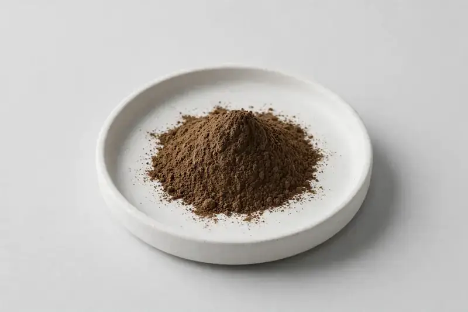

Trametes versicolor — Fruiting body Trametes versicolor extract with polysaccharides and beta-glucan options, for supplement and functional food brands.

Overview
Turkey tail extract is a mushroom extract from the fruiting body of Trametes versicolor, widely used in immune-support and gut-health positioned supplements. Buyers source turkey tail because it is one of the better-known functional mushrooms, and they need a declared source material with a marker that fits their label. We are a Xi'an-based trading company founded in 2019, working with partner producers; we confirm supply against your target specification rather than publishing fixed stock specs.
Specifications below reflect commonly requested options in the market — not a stock list. Share your target spec and we'll confirm exactly what we can supply, honestly.
| Specification | Details |
|---|---|
| Species identity | Trametes versicolor |
| Source material | Fruiting body — declared per product |
| Marker compound | Polysaccharides / beta-glucan — commonly requested: 10%–50% polysaccharides; beta-glucan stated per product |
| Appearance | Brown to dark brown fine powder |
| Mesh size | Typically 80–100 mesh (confirm per inquiry) |
| Testing | COA/TDS arranged on request; scope agreed per your spec |
Applications
Documentation
We do not claim certifications or in-house testing. COA/TDS documents can be arranged on request, with testing scope agreed against your specification.
FAQ
Related products
Ganoderma lucidum
Key marker: Polysaccharides
View specs →Hericium erinaceus
Key marker: Beta-Glucan
View specs →Cordyceps militaris
Key marker: Cordycepin
View specs →Inonotus obliquus
Key marker: Polysaccharides
View specs →Grifola frondosa
Key marker: Beta-Glucan
View specs →Send your target spec and volumes — we'll respond with a tailored quotation.
Request a Quote